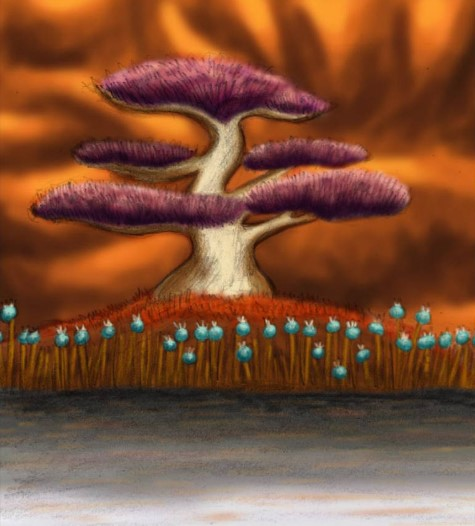
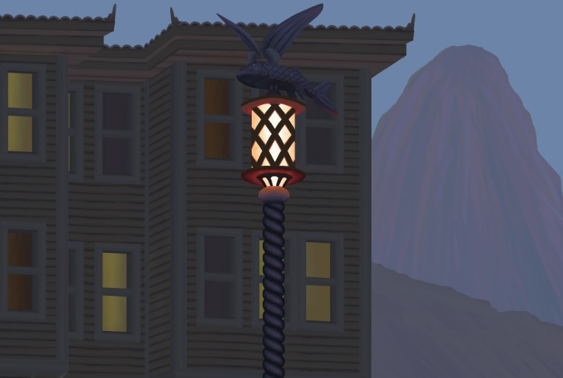

Ζωγραφική
Στον τομέα της ζωγραφικής, έχω ασχοληθεί κυρίως στα πλαίσια της διασκέδασης. Έχω δημιουργήσει σχέδια με διάφορους τρόπους και τεχνικές τόσο με φυσικά μέσα όσο και με ψηφιακά.

Πρόσφατα, άρχισα να αξιοποιώ το πρόγραμμα Photoshop για τη δημιουργία ζωγραφιών είτε τελείως ψηφιακά, είτε τροποποιώντας σχέδια που είχαν γίνει πρώτα στο χέρι.
